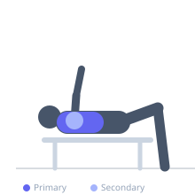

Exercise guide / Machine Fly
Machine Fly
The machine fly, commonly called the pec deck, is a seated isolation exercise for the pectoralis major. The user pushes two padded arm rests or handles together in a horizontal arc. The machine's guided path removes the need for shoulder stabilization, allowing near-complete focus on pectoral contraction, making it safe and effective for high-rep isolation work.
Primary muscles
pectoralis major sternal
pectoralis major clavicular
Secondary muscles
deltoid anterior
pectoralis minor
Equipment
Pec Deck / Fly Machine


Starting position
- Sit in the pec deck machine with back flat against the pad. Adjust the seat so the arms or handles are at chest level. Place forearms on the pads or grip the handles with elbows slightly bent.
Setup
- Adjust the seat height so the arm pads or handles are at mid-chest level when seated. Set the range limiter if available to protect the shoulder at full extension.
Steps
- Step 1: Sit with the back against the pad, feet flat on the floor. Position forearms on the pads or hands on the handles.
- Step 2: Begin with arms wide, feeling a gentle stretch across the chest.
- Step 3: Exhale and squeeze both arms together in front of the chest, holding the peak contraction for a second.
- Step 4: Inhale and slowly allow the arms to open back to the start, controlling the eccentric stretch.
Coaching cues
- Lead with your elbows, not your hands, as you squeeze inward
- Feel the chest doing the work — not the shoulders or arms
Breathing
- Exhale as you squeeze inward; inhale as you open back out.
Range of motion
- Open until a comfortable chest stretch is felt (forearms should not go behind the body); close until the pads nearly touch.
Tempo
- 2-1-2-0 (squeeze for 1 second at peak contraction)
Common mistakes
- Opening too wide and creating shoulder impingement at the extreme end range
- Rounding the lower back off the seat pad
Safety
- Set the starting-width stopper so the arms do not travel behind the plane of the torso
- Do not use this machine if shoulder impingement or labrum issues are present
Training
- hypertrophy: 10–20 reps
- endurance: 15–25 reps
- hypertrophy: 3–4 sets
- endurance: 2–3 sets
- Rest: {'hypertrophy': 60, 'endurance': 45}